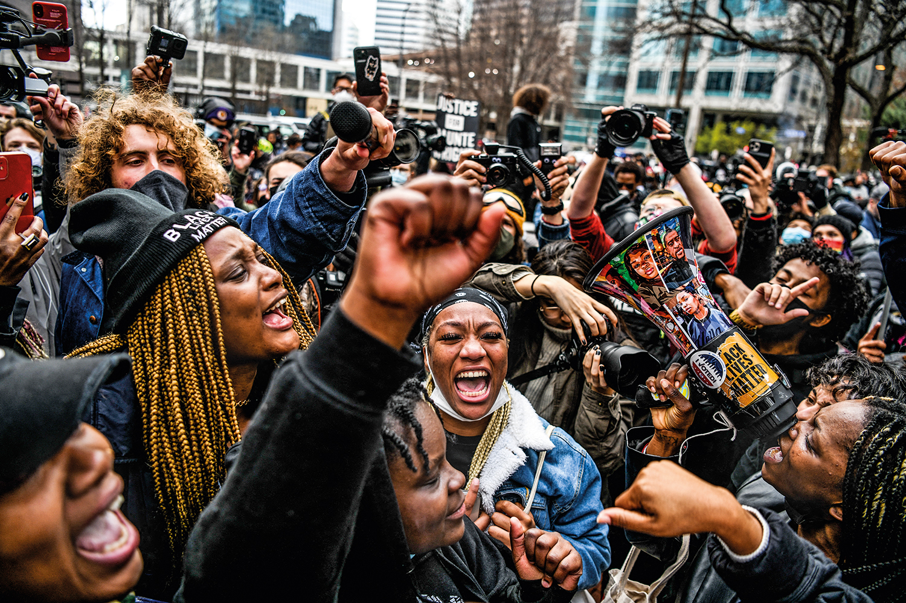

Você sabe o que é racismo estrutural?
A herança discriminatória da escravidão (todas as relações com base na ideia de inferioridade dos negros que foram transmitidas) em conjunto com a falta de medidas e ações que integrassem os negros e indígenas na sociedade, como políticas de assistência social ou de inclusão racial no mercado de trabalho, gerou o que se entende por racismo estrutural, ou seja, uma discriminação racial enraizada na sociedade. Isto é, o racismo estrutural não diz respeito ao ato discriminatório isolado (como xingar pejorativamente alguém por conta da cor da sua pele) ou até mesmo um conjunto de atos dessa natureza. Ele representa um processo histórico em que condições de desvantagens e privilégios a determinados grupos étnico-raciais são reproduzidos nos âmbitos políticos, econômicos, culturais e até mesmo nas relações cotidianas.
“A carne mais barata do mercado é a carne negra"
Como combater o racismo estrutural?
Bem, se o racismo estrutural significa que a discriminação racial é inerente a todas as estruturas da sociedade, é possível combatê-lo? Sim, é possível, mas não é uma tarefa fácil e exige esforços conjuntos e individuais. De forma simples e direta, para combater o racismo estrutural é preciso que sejam implementadas práticas antirracistas efetivas. É necessário investir em políticas que visem: promover a igualdade e a diversidade, tanto de modo interno quanto externo, como por exemplo, na publicidade; remover obstáculos para a ascensão de minorias; manter espaços para debates e eventual revisão de práticas institucionais; promover o acolhimento de conflitos raciais e de gênero.
Uma forma de combate no Brasil são as ações afirmativas. Que podem ser definidas como políticas que visam beneficiar pessoas pertencentes a grupos discriminados e vitimados pela exclusão socioeconômica no passado ou no presente. Assim, as ações afirmativas buscam aumentar a participação desses grupos no processo político, no acesso à educação, saúde, emprego, entre outros. Um exemplo é a Lei nº 12.990, de 2014, também conhecida como Lei de cotas. Ela determina que 20% das vagas oferecidas em concursos públicos da administração pública federal, das autarquias, fundações públicas, empresas públicas e sociedades de economia mista controladas pela União sejam destinadas a pessoas negras. Outro exemplo acontece dentro da {reprograma}, na iniciativa "Todas em Tech"no mínimo 55% das vagas é para mulheres negras e 5% para mulheres trans e travestis.
Deixe aqui o seu depoimento
Compartilhe conosco o que está sentindo depois de ler todo esse texto, fale também de que forma está contribuindo atualmente para a diminuição do racismo estrutural: